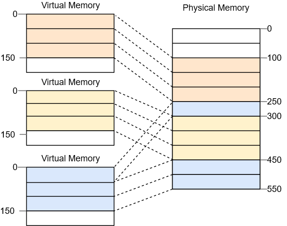
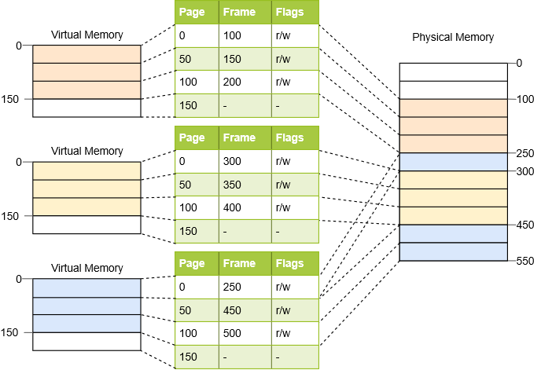
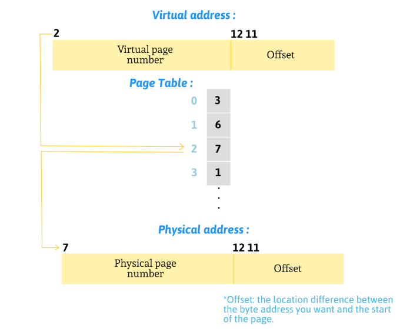

What is a memory in OS ?
Memory is a hardware device that your computer uses to load the operating system and run programs. It consists of one or more RAM chips (Random Access Memory) that each have several memory modules. The amount of real memory in a computer is limited to the amount of RAM installed. Common memory sizes are 256MB, 512MB, and 1GB. Because your computer has a finite amount of RAM, it is possible to run out of memory when too many programs are running at one time. This is where virtual memory comes in.
What is a virtual memory ?
Virtual memory increases the available memory your computer has by enlarging the "address space" or places in memory where data can be stored. It does this by using hard disk space for additional memory allocation; however, since the hard drive is much slower than the RAM, data stored in virtual memory must be mapped back to real memory in order to be used.With the help of virtual memory, all the space of Hard Disk can be used as the logical memory so that a user can execute any number of programs.
Benefits of a virtual memory :
- Unused Address Space :
With the help of Unused Address Space, a user may execute any number of programs because all the actual addresses will be treated as the logical addresses. All the programs that are given by the user will be stored into the Disk Space and all the programs will be stored into the Physical Address Space but they will be treated as they are stored into the Logical Address Space.
- Increased degree of Multiprogramming :
With the help of virtual memory we can execute many programs at one time because many programs can be fit in the physical memory so that more programs can be stored into the memory but this will not increase the response time of the CPU, means this will not affect the execution of the programs.
- Decrease Number of Input/Output Operations :
There will be less operations that are used to perform the swapping of the processes. All the programs will be automatically loaded into the memory when they are needed.
The disadvantage of virtual memory :
The process of mapping data back and forth between the hard drive and the RAM takes longer time than accessing directly to it from the memory. This means that the more virtual memory is used, the more it will slow your computer down.
While virtual memory enables your computer to run more programs than it could. Otherwise, it is best to have as much physical memory as possible. This allows your computer to run most programs directly from the RAM, avoiding the
need to use virtual memory.
Having more RAM means your computer works less, making it a faster and happier machine!
Types of virtual memory :
These are the two most common approaches:
- Paging :
Paging divides memory into fixed-size blocks or paging files, usually approximately 4 KB in size. When a computer uses up its RAM, pages not in use are transferred to the section of the hard drive designated for virtual memory using a swap file.
A swap file is a space set aside on the hard drive as the virtual memory extensions of the computer's RAM. When the swap file is needed, it is sent back to the RAM using a process called page swapping. This system ensures that computer's OS and applications do not run out of real memory.
The blocks of the virtual memory space are called pages and the blocks of the physical address space are called frames. Each page can be individually mapped to a frame, which makes it possible to split larger memory regions into non-continuous physical frames.
In the example above, we have a page size of 50 bytes, which means that each of the memory regions is split into three pages. Each page is mapped to a frame individually, so a continuous virtual memory region can be mapped to non-continuous physical frames. This mapping is done by the MMU (Memory Management Unit) which is a hardware device that handles memory operations. This allows us to start the third instance of the program without performing any defragmentation before.
We saw that each of the potentially millions of pages is individually mapped to a frame. This mapping information needs to be stored somewhere which is a table structure called Page Table.

For our above example, the page tables would look like this:Here is an example of converting a logical address to a physical address:
What is a Page Fault ?
A page fault occurs when a program attempts to access data or code that is in its address space, but is not currently located in the system RAM.
So when page fault occurs then following sequence of events happens :
-
An assembly program is started to save the general registers and other volatile information to keep the OS from destroying it.
-
Operating system finds that a page fault has occurred and tries to find out which virtual page is needed. Some times hardware register contains this required information. If not, the operating system must retrieve PC, fetch instruction and find out what it was doing when the fault occurred.
-
Once virtual address caused page fault is known, system checks to see if address is valid and checks if there is no protection access problem.
-
If the virtual address is valid, the system checks to see if a page frame is free. If no frames are free, the page replacement algorithm is run to remove a page.
-
If frame selected is dirty, page is scheduled for transfer to disk, context switch takes place, fault process is suspended and another process is made to run until disk transfer is completed.
-
As soon as page frame is clean, operating system looks up disk address where needed page is, schedules disk operation to bring it in..
-
When disk interrupt indicates page has arrived, page tables are updated to reflect its position, and frame marked as being in normal state.
-
Faulting instruction is backed up to state it had when it began and PC is reset. Faulting is scheduled, operating system returns to routine that called it.
-
Assembly Routine reloads register and other state information, returns to user space to continue execution.
The problem with Paging :
Paging causes the internal fragmentation which occurs because not every memory region is an exact multiple of the page size.
Imagine a program of size 101 in the above example: It would still need three pages of size 50, so it would occupy 49 bytes more than needed.There are 3 algorithms of paging
-
First In First Out (FIFO) :
This is the simplest page replacement algorithm. In this algorithm, the operating system keeps track of all pages in the memory in a queue, the oldest page is in the front of the queue. When a page needs to be replaced, the page in the front of the queue is selected for removal.
Here is an example of FIFO:
Initially all slots are empty, so when 7, 0, 1 come, they are allocated to the empty slots 3 Page Faults.
When 2 comes, it is not available in memory so it replaces the oldest page slot 7. 1 Page Fault.
Then 0 comes, it is already in memory. 0 Page Faults.
When 3 comes, it is not available in memory so it replaces the oldest page slot 0. 1 Page Fault.
When 4 comes, it is also not available in memory so it replaces the oldest page slot 1. 1 Page Fault.
Finally when 2 comes it is already in memory. 0 Page Faults.Note :
Belady’s anomaly proves that it is possible to have more page faults when increasing the number of page frames while using the First In First Out (FIFO) page replacement algorithm. For example, if we consider the reference string 3, 2, 1, 0, 3, 2, 4, 3, 2, 1, 0, 4 and 3 slots, we get 9 total page faults, but if we increase slots to 4, we get 10 page faults. -
Least Recently Used (LRU) :
In this algorithm, the pages which will be replaced are those which are the least recently used.
Here is an example of LRU:
Initially all slots are empty, so when 7, 0, 1 come, they are allocated to the empty slots 3 Page Faults.
When 2 comes, it will take the place of 7 because it is the least recently used. 1 Page Fault.
Then 0 comes, it is already in memory but it overwrites the old 0 to create a new one. 0 Page Faults.
When 3 comes, it is not available in memory so it replaces the least recently used page slot 1. (because 0 comes once again, it is overwritten. Meanwhile, 2 is not the least recently used). 1 Page Fault.
Then 4 comes, it is not available in memory so it replaces the least recently used page slot 2. (because 0 comes once again, it is overwritten. Meanwhile, 3 is not the least recently used). 1 Page Fault.
Finally when 2 comes again it is not available in memory so it replaces the least recently used page slot 0. (both 3 and 4 are not the least recently used). 1 Page Fault. -
Optimal Page replacement :
In this algorithm, the pages which will be replaced are those which will not be used for the longest duration of time in the future.
Here is an example of Optimal:
Initially all slots are empty, so when 0 and 9 come, they are allocated to the empty slots 2 Page Faults.
When 0 comes again, it is already in memory. 0 Page Faults.
Then 1 comes, there is still an empty slot so it will be allocated there. 1 Page Fault.
As 8 comes, it will take the place of 0 because it will not be used anymore in the future.(As 0 comes before 9, it is chosen to be replaced by 8). 1 Page Fault.
Then 1 comes again, it is already in memory. 0 Page Faults.
When 8 comes again, it is already in memory. 0 Page Faults.
Then 7 comes, it will take the place of 9 because it will not be used anymore in the future.(See the string reference from 7 onwards). 1 Page Fault.
When 8 comes again, it is already in memory. 0 Page Faults.
Then 7 comes again, it is already in memory. 0 Page Faults.
When 1 comes again, it is already in memory. 0 Page Faults.
As 2 comes, it will take the place of 1 because it will not be used anymore in the future.(See the string reference from 2 onwards). 1 Page Fault.
When 8 comes again, it is already in memory. 0 Page Faults.
Then 2 comes again, it is already in memory. 0 Page Faults.
When 7 comes again, it is already in memory. 0 Page Faults.
Then 8 comes again, it is already in memory. 0 Page Faults.
As 2 comes again, it is already in memory. 0 Page Faults.
Then 3 comes, it will take the place of 7 because it will not be used anymore in the future. (As 7 comes before 2, it is chosen to be replaced by 3). 1 Page Fault.
When 8 comes again, it is already in memory. 0 Page Faults.
Finally when 3 comes again, it is already in memory. 0 Page Faults.Note 1 :
If a new page comes and it is not allocated in the memory and all the pages that are allocated are going to be used in the future so we choose the one which is not going to be used for the longest duration of time in the future. (the furthest one in the rest of the reference string)Note 2 :
If a new page comes and it is not allocated in the memory and we have two pages that are no longer used in the future so we choose the first one that entered and we replace it.Optimal page replacement is perfect, but not possible in practice as the operating system cannot know future requests. The use of Optimal Page replacement is to set up a benchmark so that other replacement algorithms can be analyzed against it.
check up through your own example
-
- Segmentation :
The process known as segmentation is a virtual process that creates address spaces of various sizes in a computer system, called segments. Each segment is a different virtual address space that directly corresponds to process objects. When a process executes, segmentation assigns related data into segments for faster processing. The segmentation function maintains a segment table that includes physical addresses of the segment, size, and other data.

Segmentation speeds up a computer's information retrieval by assigning related data into a "segment table" between the CPU and the physical memory.
Each segment stores the processes primary function, data structures, and utilities. The CPU keeps a segment map table for every process and memory blocks, along with segment identification and memory locations. The CPU generates virtual addresses for running processes. Segmentation translates the CPU-generated virtual addresses into physical addresses that refer to a unique physical memory location.
The translation is not strictly one-to-one: different virtual addresses can map to the same physical address.The problem with Segmentation :
The differentiation between virtual and physical addresses makes segmentation really powerful. However, it has the problem of external fragmentation.
As an example, imagine that we want to run a third copy of the program we saw above:
There is no way to map the third instance of the program to virtual memory without overlapping, even though there is more than enough free memory available. The problem is that we need continuous memory and can't use the small free chunks.
One way to combat this fragmentation is to pause execution, move the used parts of the memory closer together, update the translation, and then resume execution, which is called compaction:

Now there is enough continuous space to start the third instance of our program.
The disadvantage of this defragmentation process is that is needs to copy large amounts of memory which decreases performance. It also needs to be done regularly before the memory becomes too fragmented.
This makes performance unpredictable, since programs are paused at random times and might become unresponsive.
The fragmentation problem is one of the reasons that segmentation is no longer used by most systems.
In fact, segmentation is not even supported in 64-bit mode on x86 anymore.
Instead paging is used, which completely avoids the fragmentation problem. -
Segmented Paging :
Some modern computers use a function called segmented paging. Main memory is divided into variably-sized segments, which are then divided into smaller fixed-size pages on disk. Each segmentcontains a page table, and there are multiple page tables per process.
Each of the tables contains information on every segment page, while the segment table has information about every segment. Segment tables are mapped to page tables, and page tables are mapped to individual pages within a segment.
Advantages include less memory usage, more flexibility on page sizes, simplified memory allocation, and an additional level of data access security over paging.
The process does not cause external fragmentation.